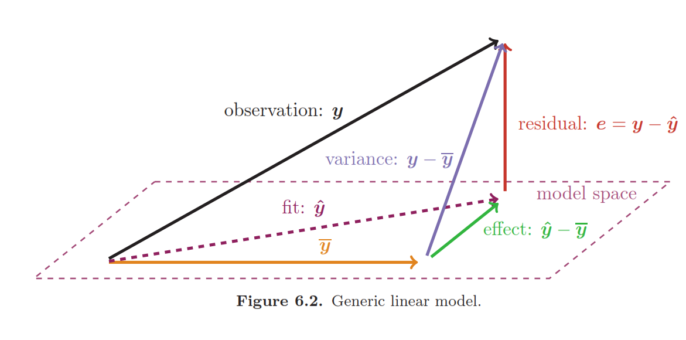
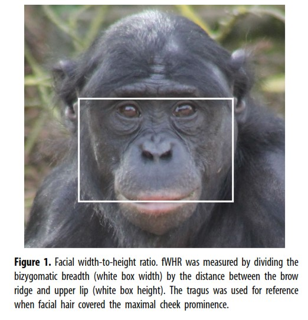
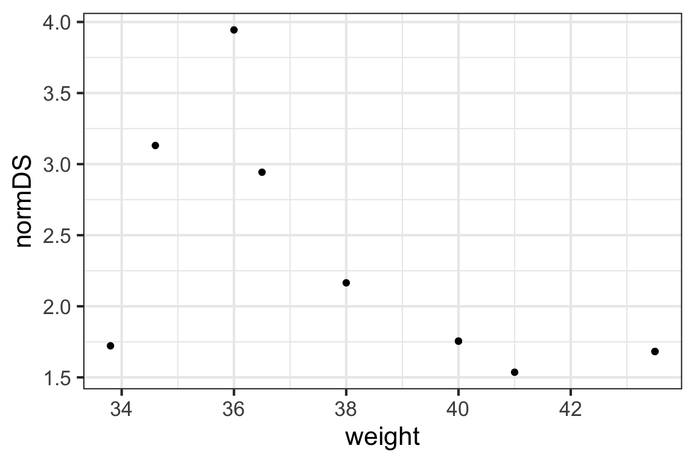

Learning Outcomes
Our goal in this module will be to obtain the tools we need to be able to do inference on the simple linear regression model. That is, we want to generate confidence intervals for the slope and intercept parameters (\(\beta_0\) and \(\beta_1\)), and also carry out hypothesis tests of statments about those parameters.
To achieve this goal, we’ll consider two more ways of estimating the \(\beta\)s (you didn’t think there could be even more, did you?) and then, more crucially, determine the sampling distributions for \(\beta_0\) and \(\beta_1\). (Once we know the sampling distributions, the machinery to find CIs and do tests will follow.)
By the end of the module you will:
- Know it’s possible to find the least-squares estimates for the parameters \(beta_0\) and \(\beta_1\) using geometry and vector algebra
- Understand the derivation of these same parameter estimates using linear algebra, including the definition of the “hat” matrix \(\mathbf{H}\) that satisfies \(\mathbf{H}\mathbf{y} = \hat{\mathbf{y}}\)
- Derive the sampling distribution of the slope parameter \(\beta_1\), finding that \(B_1 \sim N(\beta_1, \frac{\sigma}{\mid \mathbf{x} - \mathbf{\bar{x}}\mid})\)
- Derive the sampling distribution of the intercept parameter \(\beta_0\), finding that \(B_0 \sim N(\beta_0, \sigma \sqrt{\frac{1}{n} + \frac{\bar{\mathbf{x}}^2}{S_{xx}}})\)
- Find an unbiased estimator for the residual variance, \(\hat{\sigma^2} = \frac{1}{(n-2)} \sum_{i=1}^{n} e_i^2\)
- Use the findings above to obtain a method to construct confidence intervals and do hypothesis tests about the \(\beta\)s (Yesssss! This is regression inference. Objective met.)
These materials come from your text book, FAStR2 Chapter 6.3.4 - 6.4.5.
Bases, Orthogonality, Projections…Oh, My!
Are orthogonal and orthonormal bases and projections the stuff of your dreams, or confusing nightmares?
If you love them, by all means please read 6.3.4 in your text book, which illustrates how to derive least squares parameter estimates via geometry and vector algebra.
If not, it’s OK. Take a peek just to see how you feel about it and if needed, carefully proceed around that section and don’t worry about it.
This section is lovely and quite possibly also confusing. The amount you already know about geometry and vector algebra probably determines which (there are potentially lots of concepts and notation that are not familiar). So, we will focus on other approaches.
Regression Parameter Estimates via Matrix Algebra
Now, having already derived identical estimators for the regression parameters \(\beta_0\) and \(\beta_1\) several ways, your motivation to do the same thing yet another way may not be high.
But yes, really! We shall do it anyway. Why? For later topics, thinking about the regression equation as a matrix equation will prove helpful. Also, here’s a chance to see yet another application of linear algebra in all its glory.
Geometric Interpretation of a Linear Model
Textbook Reference: FAStR2 p. 464 and Chapter 6.3.5
Remember our old friend, the sketch of the geometric interpretation of a linear model? It’s about to come in handy.

Recall, our linear regression model in matrix notation was:
\[ \mathbf{y} = \mathbf{X}\mathbf{\beta} + \mathbf{\epsilon}\]
Where \(\mathbf{X}\) is the model matrix and \(\mathbf{y}\), \(\mathbf{\beta}\), and \(\mathbf{\epsilon}\) are the response, parameter, and residual vectors.
The sketch above indicates that the residual vector \(\mathbf{\epsilon} = \mathbf{y} - \mathbf{\hat{y}} = \mathbf{y} - \mathbf{X}\mathbf{\hat{\beta}}\) is orthogonal to any vector in the model space.
So (as you can see) the residual vector \(\mathbf{y} - \mathbf{X}\mathbf{\hat{\beta}}\) is orthogonal to the fit vector \(\mathbf{\hat{y}}\). But how did we know that the fit vector was in the model space to begin with? The fit vector \(\mathbf{\hat{y}}\) is a linear combination of the columns of the model matrix \(\mathbf{X}\). The columns of the model matrix \(\mathbf{X}\) are a basis for the model space (so – relevant to our current endeavor – they have to be in the model space, too). Whew! So what?
The residual vector will be orthogonal to any vector in the model space, so \(\mathbf{y} - \mathbf{X}\mathbf{\hat{\beta}} \perp \mathbf{x_{.j}}\) for all \(j\). This means that, for all \(j\),
\[ \mathbf{x_{.j}} \cdot (\mathbf{y} - \mathbf{X}\mathbf{\hat{\beta}}) = 0 \] Aha!
Rewriting this in matrix form, we have
\[ 0 = \mathbf{X}^{\top} (\mathbf{y} - \mathbf{X}\mathbf{\hat{\beta}})\]
You Solve for \(\mathbf{\hat{\beta}}\)
Text book reference: FAStR2 Chapter 6.3.5
We want to solve
\[ 0 = \mathbf{X}^{\top} (\mathbf{y} - \mathbf{X}\mathbf{\hat{\beta}})\]
For \(\mathbf{\beta}\), the vector of regression parameter estimates.
Before you continue, give it a try.
There are no tricky substitutions or anything like that - just follow through with the basic algebra. Solution is in the next section…
We Solve for \(\mathbf{\hat{\beta}}\)
We want to solve
\[ 0 = \mathbf{X}^{\top} (\mathbf{y} - \mathbf{X}\mathbf{\hat{\beta}})\]
For \(\mathbf{\beta}\), the vector of regression parameter estimates.
First, multiply through by \(\mathbf{X}^{\top}\) on the right hand side:
\[ 0 = \mathbf{X}^{\top} \mathbf{y} - \mathbf{X}^{\top}\mathbf{X}\mathbf{\hat{\beta}}\]
Then, move the \(\mathbf{\beta}\) term to the left hand side:
\[ \mathbf{X}^{\top}\mathbf{X}\mathbf{\hat{\beta}} = \mathbf{X}^{\top} \mathbf{y}\]
And finally, multiply both sides by \((\mathbf{X}^{\top}\mathbf{X})^{-1}\) to get
\[ \mathbf{\hat{\beta}} = (\mathbf{X}^{\top}\mathbf{X})^{-1} \mathbf{X}^{\top} \mathbf{y}\]
Sweet!
Side Note: You may have been worried about it, so let me assure you that the inverse of \(\mathbf{X}^{\top}\mathbf{X}\) will exist as long as the columns of \(\mathbf{X}\) are linearly independent.
Putting on the Hat!
The expression we just found:
\[ \mathbf{\hat{\beta}} = (\mathbf{X}^{\top}\mathbf{X})^{-1} \mathbf{X}^{\top} \mathbf{y}\]
can be combined with the definition of the fit vector \(\mathbf{\hat{y}} = \mathbf{X}\mathbf{\hat{\beta}}\) to get an expression for \(\mathbf{\hat{y}}\), the fitted values, in terms of the data (\(\mathbf{y}\) and \(\mathbf{X}\)):
\[\mathbf{\hat{y}} = \mathbf{X}\mathbf{\hat{\beta}} = \mathbf{X}(\mathbf{X}^{\top}\mathbf{X})^{-1} \mathbf{X}^{\top} \mathbf{y}\]
The matrix \(\mathbf{H} = \mathbf{X}(\mathbf{X}^{\top}\mathbf{X})^{-1} \mathbf{X}^{\top}\) is called the “hat” matrix because it puts a hat on \(\mathbf{y}\). It will come in handy in other ways in later modules.
R Example?
We can use the estimators we just derived in R to find slope and intercept estimates for a small dataset.
We will use a tiny subset of the bonobos dataset as an example. You may recall the dataset from a recent test and problem set. Briefly, the dataset is from a 2019 paper by J.S. Martin and colleagues on bonobo face measurements. The authors worked with 117 bonobos in European zoos and recorded data including their Sex, Age in years, weight, and some measurements about their face:

Finally, they also measured each bonobo’s assertiveness score (AssR) and dominance score (normDS).
The dataset is at https://sldr.netlify.com/data/bonobo_faces.csv and you can read 10 observations from the dataset in to R by running:
We might wonder whether size (as measured by weight) is a good predictor of the dominance score, normDS. Graphically:
gf_point(normDS ~ weight, data = bonobos)
Of course, we know how to fit this model using lm() – or, we could use any of the expressions for the slope and intercept that we found in the previous module. Let’s use lm():
##
## Call:
## lm(formula = normDS ~ weight, data = bonobos)
##
## Residuals:
## Min 1Q Median 3Q Max
## -1.20771 -0.28945 -0.01387 0.27096 1.32841
##
## Coefficients:
## Estimate Std. Error t value Pr(>|t|)
## (Intercept) 7.75581 2.58909 2.996 0.0172 *
## weight -0.14278 0.06668 -2.141 0.0646 .
## ---
## Signif. codes: 0 '***' 0.001 '**' 0.01 '*' 0.05 '.' 0.1 ' ' 1
##
## Residual standard error: 0.6935 on 8 degrees of freedom
## Multiple R-squared: 0.3644, Adjusted R-squared: 0.2849
## F-statistic: 4.586 on 1 and 8 DF, p-value: 0.06464Or, if you want it to look prettier,
##
## % Table created by stargazer v.5.2.2 by Marek Hlavac, Harvard University. E-mail: hlavac at fas.harvard.edu
## % Date and time: Mon, Apr 13, 2020 - 4:06:58 AM
## \begin{table}[!htbp] \centering
## \caption{}
## \label{}
## \begin{tabular}{@{\extracolsep{5pt}}lc}
## \\[-1.8ex]\hline
## \hline \\[-1.8ex]
## & \multicolumn{1}{c}{\textit{Dependent variable:}} \\
## \cline{2-2}
## \\[-1.8ex] & normDS \\
## \hline \\[-1.8ex]
## weight & $-$0.143$^{*}$ \\
## & (0.067) \\
## & \\
## Constant & 7.756$^{**}$ \\
## & (2.589) \\
## & \\
## \hline \\[-1.8ex]
## Observations & 10 \\
## R$^{2}$ & 0.364 \\
## Adjusted R$^{2}$ & 0.285 \\
## Residual Std. Error & 0.694 (df = 8) \\
## F Statistic & 4.586$^{*}$ (df = 1; 8) \\
## \hline
## \hline \\[-1.8ex]
## \textit{Note:} & \multicolumn{1}{r}{$^{*}$p$<$0.1; $^{**}$p$<$0.05; $^{***}$p$<$0.01} \\
## \end{tabular}
## \end{table}Either way, the parameter estimates are \(\beta_0 = 7.76\) and \(\beta_1 = -0.143\).
We can compute these using
\[ \mathbf{\hat{\beta}} = (\mathbf{X}^{\top}\mathbf{X})^{-1} \mathbf{X}^{\top} \mathbf{y}\]
We just need to construct the model matrix \(\mathbf{X}\), and we’ll need R functions t() (matrix transpose), solve() (matrix inverse), and %*% (matrix multiplication).
First, construct the model matrix. Its first column should be all ones, and its second column should be the weight data from bonobos.
X <- cbind(rep(1, nrow(bonobos)),
bonobos$weight)# a shortcut way:
X <- model.matrix(lm(normDS ~ weight, data = bonobos))Next, use our formula for \(\mathbf{\beta}\) to compute the parameter estimates.
betas <- solve( t(X) %*% X ) %*% t(X) %*% bonobos$normDS
betasHurrah! It works.
Finally, find the hat matrix \(\mathbf{H} \mathbf{X}(\mathbf{X}^{\top}\mathbf{X})^{-1} \mathbf{X}^{\top}\) and use it to compute the fitted values \(\mathbf{\hat{y}}\). Compare these the R’s results from fitted().
H <- X %*% solve( t(X) %*% X ) %*% t(X)
y_hat <- H %*% bonobos$normDS
cbind(y_hat, fitted(lm(normDS ~ weight, data = bonobos)))Let’s Do It Again
As a nice recap, I encourage you to check out a video by Prof. Fishback (from GVSU’s Mathematics Department). Made for a linear algebra class, it reviews the linear regression model basics and derives the normal equation for linear regression (i.e., the estimates for \(\mathbf{\hat{\beta}}\)) from the perspective of linear algebra students applying their know-how to stats, rather than stats students using linear algebra.
Challenge: Prof Fishback makes one tiny error in the video (it is inconsequential, in terms of the linear algebra and this derivation). Can you spot it? Email me your answer for a few homework points.
(You can also watch directly on YouTube if you prefer.
Sampling Distributions of Estimators
We have now derived (the same) estimators for the regression slope and intercept parameters \(\beta_0\) and \(\beta_1\), nearly ad infinitum. We also talked a little bit about an estimator for \(\sigma\), the standard deviation of the residuals.
But none of this gets us very close to our goal of inference about these regression parameters – for that, we need to consider our estimators as random variables and determine their variances.
(It would also be nice to find their expectations and see that they match the true parameter values; that is, \(E(\hat{\beta_0}) = \beta_0\) and \(E(\hat{\beta_1}) = \beta_1\); in other words, to show our estimators are unbiased.)
If we get the expectation and variance of an estimator, we’ve characterized its sampling distribution (which is just what we need to do a CI or test).
To pursue this project, we will consider our estimators \(\hat{\beta}\) as random variables. To emphasize this, in section 6.4 of your book, we use the notation \(B_0\) for \(\hat{\beta}_0\) and \(B_1\) for \(\hat{\beta}_1\). But whichever notation is used, they are the same two quantities.
The Book is Better?
Please note that the next few sections of this tutorial (which consider the expectation and variance of the slope and intercept, and an unbiased estimator for the residual standard deviation) take a different approach from the FAStR book.
The approach in the book is arguably more elegant, but perhaps also less intuitive. And in the spirit of this chapter (and, well, math…) it’s always interesting to come at the same problem several ways.
Each section will refer to the corresponding section of FAStR, which you can expect to arrive at the same solution by a different route.
Notation Note
One last note: I have carefully curated the videos included in the next sections to find you the ones I think are most clear and concise (and correct). (There are others out there that are…not.) Some have small notation differences that will be highlighted to avoid confusion as much as possible - I think this is more efficient than making brand new videos just for small notation changes.
Sampling Distribution of the Regression Slope
Text book reference: FAStR Chapter 6.4.2
First, let’s consider the regression slope and investigate its sampling distribution (in other words, its mean and variance).
Why slope first? Well, it’s everyone’s favorite…honestly, it kind of is. The slope is the parameter (of our three) that best measures the relationship between predictor and response variables, and measuring that relationship is a main goal of most regression modelling. So slopes rule!
For this first one, we’ll return to the non-matrix-notation version of our regression equation. Here we go!
(You can also watch directly on YouTube if you prefer.
To sum up:
- Our estimator \(B_1 = \hat{\beta}}_1\) is unbiased (its expected value is \(\beta_1\)). What a relief!
- The standard deviation of \(B_1\) is \(\frac{\sigma}{\sqrt{\sum(x_i - \bar{x})^2}}\) or, in matrix notation, \(\frac{\sigma}{\mid \mathbf{x} - \mathbf{\bar{x}}\mid}\).
- Putting them together, the sampling distribution of \(B_1\) is \(B_1 \sim N(\beta_1, \frac{\sigma}{\sqrt{\sum(x_i - \bar{x})^2}})\).
- Note that at the end of the video, it says \(\hat{\beta}_1 \sim N(\beta_1, \frac{\sigma^2}{{\sum(x_i - \bar{x})^2}})\), but that is using the notation \(N(\mu, \sigma^2)\) (mean and variance), where we always use \(N(\mu, \sigma)\) (mean and standard deviation).
Sampling Distribution of the Intercept (and Slope)
Text book reference: FAStR Chapter 6.4.3
Now, let’s consider variance for the intercept estimator. Well…actually, this time, we’ll work in matrix notation, so we’ll actually get the variance of the slope (again), too.
(For a demonstration that \(B_0 = \hat{\beta}_0\) is an unbiased estimator of \(\beta_0\), see section 6.4.3 of the book for details. Or, check out the optional additional video.)
Notation notes:
- A capital letter with a tilde (\(\sim\)) under it means a non-stochastic matrix
- A capital letter with a bar under it means a stochastic matrix
- A lower case letter with a bar under it means a vector
- \(u\) refers to the residuals
- A tick mark (“prime”) after a matrix indicates a matrix transpose
(You can also watch directly on YouTube if you prefer.
This is short and sweet and lovely, which is why I showed it to you. But it’s also a bit unsatisfying in that it’s not straightforward to pull out specific expressions for the variances of the two \(\beta\)s (slope and intercept).
Var(B0), non-matrix version
Here is a sketch of the derivation of the expression for the variance of \(B_0\), not in matrix form:
We know from the regression equation that
\[B_0 = \bar{Y} - B_1\bar{x}\] Notice that (some of these are from 343):
- \(B_0\) and \(\bar{Y}\) are independent and \(\bar{x}\) is a constant conditional on the data
- The variance of the difference of two independent random variables is the difference of their variances
- The variance of the product of a random variable times a constant \(a\) increases the variance by a factor of \(a^2\).
- The variance of a mean is \(\frac{\sigma^2}{n}\) (its standard deviation is \(\frac{\sigma}{\sqrt{n}}\))
Using all this, we can derive \(Var(B_0)\). Give it a go before clicking to the next page…
Derivation
\[ Var(B_0) = Var(\bar{Y} - B_1\bar{x}) =\]
\[ Var(\bar{Y}) - \bar{x}^2 Var(B_1)\]
Then, recalling that \(Var(B_1) = \frac{\sigma^2}{{\sum(x_i - \bar{x})^2}}\),
\[ \frac{\sigma^2}{n} - \frac{\bar{x}^2\sigma^2}{{\sum(x_i - \bar{x})^2}} = \]
\[ \sigma^2 \bigg{(}\frac{1}{n} - \frac{\bar{x}^2}{{\sum(x_i - \bar{x})^2}}\bigg{)}\]
So the corresponding standard deviation is (taking the square root)
\[ \sigma \sqrt{\bigg{(}\frac{1}{n} - \frac{\bar{x}^2}{{\sum(x_i - \bar{x})^2}}\bigg{)}} = \sigma \sqrt{\bigg{(}\frac{1}{n} - \frac{\bar{x}^2}{{S_{xx}}}\bigg{)}}\]
So the sampling distribution of \(B_0\) is \(N(\beta_0, \sigma \sqrt{\bigg{(}\frac{1}{n} - \frac{\bar{x}^2}{{S_{xx}}}\bigg{)}})\).
Estimator for \(\sigma^2\)
Textbook reference: FAStR Chapter 6.4.5
In the last module, we noted that an apparently natural estimator for the residual standard deviation is the MLE,
\[\hat{\sigma}_{MLE} = \frac{\sum_{i=1}^{n}e_i}{n} = \frac{SSE}{n}\]
You were forewarned, though, that this estimator is acutally biased, and we want instead
\[\hat{\sigma} = S^2 = \frac{\sum_{i=1}^{n}e_i}{(n-2)} = \frac{SSE}{(n-2)}\]
How? Why? Watch and see…
As in the earlier video, tildes and bars under letters indicate matrices/vectors, capital rather than small letters mean matrices, and \(u\) is used for the residuals.
(You can also watch directly on YouTube if you prefer.
OK, great! We now have all the tools we need to figure out how to construct CIs and carry out tests.
INFERENCE
Textbook reference: FAStR Chapter 6.4.5
Finally, we are near our goal: establish a method to generate confidence intervals and carry out tests for \(\beta_0\) and \(\beta_1\), the intercept and slope.
Slope
We found that \(B_1 \sim N(\beta_1, \frac{\sigma}{\sqrt{\sum(x_i - \bar{x})^2}})\). But we can’t stop there, because \(\sigma\) is another parameter of the model; we don’t know it’s true value, only its estimate \(\hat{\sigma}\).
We begin by standardizing \(B_1\) to obtain a random variable with a standard normal distribution:
\[ \frac{B_1 - \beta_1}{\sigma \ \sqrt{\sum(x_i - \bar{x})^2}} \sim N(0,1)\]
Remind you of anything a bit? Hypothesis tests for a mean, perhaps?
More about \(\sigma\)
We know that \(\frac{SSE}{\sigma^2} \sim Chisq(n - 2)\) (see FAStR page 483), and since \(S^2 = \frac{SSE}{(n-2)}\), \(\frac{S^2 (n-2)}{\sigma^2} \sim Chisq(n-2)\).
So what is the distribution of
\[ \frac{B_1 - \beta_1}{S^2 \ \sqrt{\sum(x_i - \bar{x})^2}} \]
Here we will do some rearrangement that will make sense later. First, divide both top and bottom by \(\frac{\sigma}{\sqrt{\sum(x_i - \bar{x})^2}}\) to get:
\[ \frac{ \frac{B_1 - \beta_1}{\sigma^2 \ \sqrt{\sum(x_i - \bar{x})^2}}} {\frac{S}{\sigma}}\]
Next, multiply the denominator by $ 1 = $:
\[ \frac{ \frac{B_1 - \beta_1}{\sigma^2 \ \sqrt{\sum(x_i - \bar{x})^2}}} {\frac{S\sqrt{n-2}}{\sigma} / \sqrt{n-2}}\]
Any idea why we chose to do that?
Normal, Chi-square, and t-distributions
Remember where the t-distribution came from?
A t-distribution with \(d\) degrees of freedom is
\[\frac{z}{\sqrt{\frac{\chi ^ 2}{d}}}\]
Where \(z\) is a random variable with a standard normal distribution, and \(\chi^2\) is a random variable with a chi-square distribution with \(d\) degrees of freedom.
Ahhhhh, now it makes sense!
\[ \frac{ \frac{B_1 - \beta_1}{\sigma^2 \ \sqrt{\sum(x_i - \bar{x})^2}}} {\frac{S\sqrt{n-2}}{\sigma} / \sqrt{n-2}} \sim t(\text{df} = n-2)\]
THIS. IS. GREAT. It means that we can use almost the same procedure we used for a one-sample t-test (or interval) for a mean, but for the regression slope. We just have to use the standard error \(\frac{s}{ \sqrt{\sum(x_i - \bar{x})^2}}\) instead of the SE for a mean (which was \(\frac{s}{\sqrt{n}}\)), and adjust the degrees of freedom to match the number of rows in the model matrix \(\mathbf{X}\) (minus 2).
The only hardship now is that it’s kind of a pain to compute
\[SE(\hat{\beta_1}) = \frac{s}{\sqrt{\sum(x_i - \bar{x})^2}} = \frac{\sqrt{MSE}}{\sqrt{S_{xx}}} = \frac{SE(\text{residuals})}{\sqrt{S_{xx}}}\] There are a lot of ways to write it but whichever one you choose it’s a lot of tapping away on a calculator! Luckily, we have R functions to do all that work for us.
In fact, the summary() of an lm() fit includes these standard errors in the coefficient table, labelled “Std. Error”.
bm <- lm(normDS ~ weight, data = bonobos)
summary(bm)##
## Call:
## lm(formula = normDS ~ weight, data = bonobos)
##
## Residuals:
## Min 1Q Median 3Q Max
## -1.20771 -0.28945 -0.01387 0.27096 1.32841
##
## Coefficients:
## Estimate Std. Error t value Pr(>|t|)
## (Intercept) 7.75581 2.58909 2.996 0.0172 *
## weight -0.14278 0.06668 -2.141 0.0646 .
## ---
## Signif. codes: 0 '***' 0.001 '**' 0.01 '*' 0.05 '.' 0.1 ' ' 1
##
## Residual standard error: 0.6935 on 8 degrees of freedom
## Multiple R-squared: 0.3644, Adjusted R-squared: 0.2849
## F-statistic: 4.586 on 1 and 8 DF, p-value: 0.06464A Confidence Interval
So, after all that, we can find a CI for a regression slope according to:
\[ B_1 \pm t_*SE(B_1)\]
Where \(t_*\) is a critical value from a \(t(n-2)\) distribution.
As an example, find a 95% CI for the slope of our bonobo regression model.
bm <- lm(normDS ~ weight, data= bonobos)
summary(bm)
CI95 <- -0.14278 + c(-1,1) * qt(0.975, df = nrow(bonobos) - 2) * 0.06668
CI95# a shortcut:
bm <- lm(normDS ~ weight, data= bonobos)
confint(bm, "weight", level = 0.95)Notice the shortcut – R function confint() returns CIs (with a default confidence level of 95%).
A t-test
We can also test the null hypothesis \(H_0: \beta_1 = \beta_{1\text{null}}\) (where \(\beta_{1\text{null}}\) is some hypothetical slope value of interest) using the standardized test statistic
\[ t = \frac{\hat{\beta}_1 - \beta_{1\text{null}}}{SE(\hat{\beta}_1)}\]
The most common value for \(\beta_{1\text{null}}\) is \(0\), because if \(\beta_1 = 0\) that means that there is no relationship between the predictor and response and the predictor is useless as a predictor. If we can reject that null hypothesis, we can conclude that the predictor does have some utility.
To practice, carry out a two-sided test of \(H_0: \beta_1 = 0\) for the bonobo regression.
bm <- lm(normDS ~ weight, data= bonobos)
summary(bm)
t_stat <- (-0.14278 - 0) / (0.06668)
p_val <- 2 * pt(t_stat, df = nrow(bonobos) - 2, lower.tail = TRUE)
p_val#shortcut: just use model summary
bm <- lm(normDS ~ weight, data= bonobos)
summary(bm)A shortcut: Notice that this p-value is already in the model summary (in the last column of the coefficient table, labelled “Pr(\(>\vert\)t\(\vert\))”). Note that for simple linear regression, the p-value reported at the very end of the model summary is the same (although with a different test stat and df) – this is only true when there is only one predictor. Stay tuned for later modules to know that that thing at the end is, but for now, get used to using the info in the coefficient table.
Poor intercept
A nearly identical argument demonstrates that we can use t-tests and intervals for the intercept, too. We just need to use the appropriate standard error estimate (which, luckily, R again reports for us).
The details are not included here because they really are just about the same, and also CIs and tests of hypotheses about intercept values are generally of less practical interest than the corresponding ones about slopes.